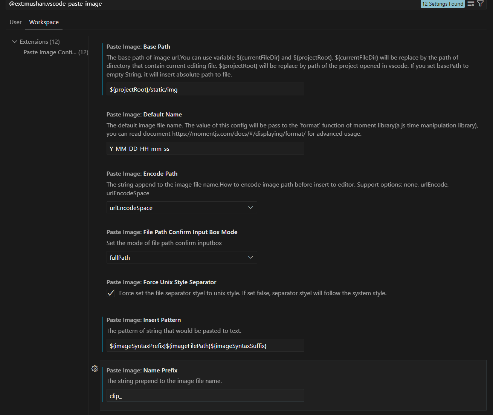
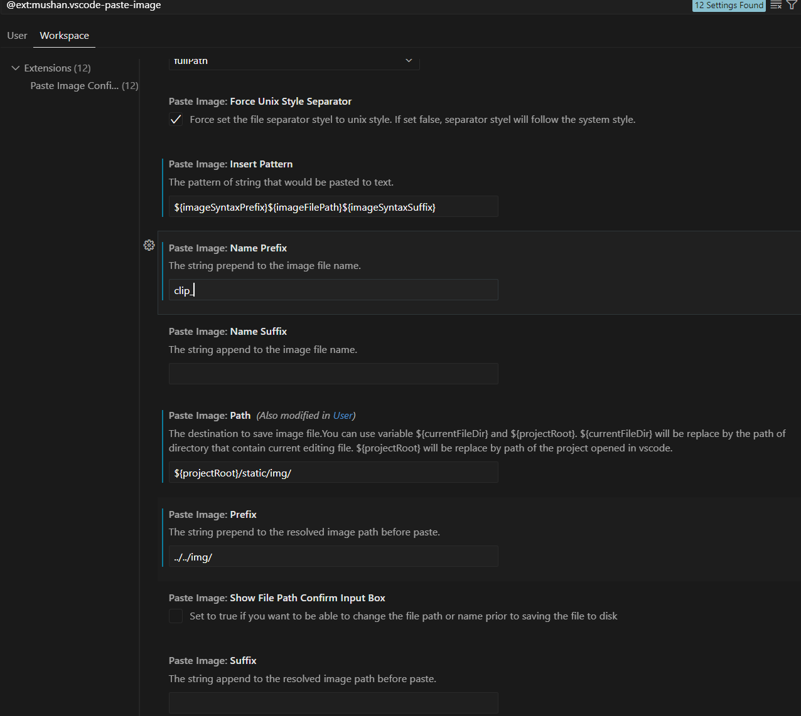

Instrucciones para crear un blog 3
Vamos a recopilar lo que puse en los primeros post ya que he querido volver a montar un blog para un amigo y me hacía falta refrescar.
Empezar un blog completamente gratis. Parte 1
Este es un post especial, quiero empezar un blog desde cero usando las herramientas más modernas y actuales. El objetivo es montar la estructura del blog rápidamente y que lo montemos sin gastar un sólo euro en servidores o software. Usaremos solo herramientas habituales y ampliamente usadas por la comunidad web, rápidas y con soporte y última tecnología.
Vamos allá, empecemos.
Cómo hacer el blog con HUGO en github pages
Pues si, esta es para mi, la solución más simple y fácil de crear un blog de última generación y gratis.
Usaremos HUGO para la estructura interna de Blog y gitHub como servidor, es decir como nuestro almacén de los ficheros y servicio de distribución de la web. GitHub es una de las webs y empresas de desarrollo más importantes, y que cualquier programador conoce. Es la principal fuiente de todos los poryectos de software mundial, equipo enormes lo utilizan a diario, desde BITCOIN a empresas y particulares y no solo desarrolladores de código libre.
Por otra parte HUGO es un framwork de diseño estandarizado, una especie de plantilla para crear webs genéricas y especialmente indicada para blogs.
Qué es HUGO?
Hugo es un generador de sitios estáticos que se utiliza para crear blogs y sitios web de manera rápida y eficiente. A diferencia de los sistemas de gestión de contenido (CMS) como WordPress, que generan páginas dinámicamente en un servidor cada vez que un usuario las solicita, Hugo precompila todo el contenido en archivos HTML estáticos. Esto hace que los sitios web generados con Hugo sean* extremadamente rápidos*, seguros y fáciles de desplegar en cualquier servidor o servicio de alojamiento estático.
Nota: WordPress genera la página al vuelo consultando una base de datos online, mientras que con HUGO ya está hecha la pagina en html, por eslo es mucho más rápido
Características clave de Hugo:
- Rapidez: Hugo es uno de los generadores de sitios más rápidos disponibles, capaz de generar miles de páginas en segundos.
- Markdown: Hugo utiliza Markdown para crear contenido, lo que hace que escribir y formatear publicaciones sea simple e intuitivo.
- Temas: Viene con soporte para temas, lo que facilita cambiar el aspecto del sitio o reutilizar plantillas de diseño.
- Flexible y personalizable: Hugo permite personalizar plantillas y estructuras de contenido, lo que lo hace adecuado tanto para blogs simples como para sitios web más complejos.
- Portabilidad: Al generar un sitio estático, el contenido puede ser alojado en cualquier lugar, desde servidores tradicionales hasta servicios de almacenamiento en la nube como GitHub Pages o Netlify.
- SEO y velocidad optimizados: Los sitios estáticos generados por Hugo son rápidos y amigables para SEO, lo que ayuda en el rendimiento y posicionamiento en buscadores.
En resumen, Hugo es una excelente opción para quienes desean crear blogs o sitios web estáticos.
Instalación de HUGO
En primer lugar me he instalado HUGO en mi PC usando winget de windows, que básicamente consiste en abrir un terminal en cmd y poner esto:
winget install Hugo.Hugo.Extended
Así se ha instalado y ocupa poco unos 30 Megas, mucho menos que jekyll que es otro sistema parecido. Quizás necesites también instalar Go que se puede descargar aquí simplemente con el “.exe” que descargas.
Crear tu primer blog
Una vez tenemos HUGO en nuestro PC vamos al directorio donde queremos almacenar y crear el blog en local y abrimos un terminal (con git bash por ejemplo o con CMD). Boton derecho sobre el explorador de ficheros en dicha carpeta abrir en Terminal, y ya en la ventana del terminal escribe lo siguiente con el nombre que quieras para el blog al final:
hugo new site mi_nuevo_blog
Esto crea una nueva carpeta en el directorio donde te encontrabas con la estructura básica de HUGO de un blog llamdo “mi_nuevo_blog”
La estructura de ficheros que crea será algo así:
mi_nuevo_blog/
├── archetypes/
├── assets/
├── hugo.toml
├── content/
│ ├── _index.md
│ ├── about.md
│ └── posts/
│ ├── post-1.md
│ ├── post-2.md
│ └── post-3.md
├── i18n/
├── data/
├── layouts/
├── static/
│ └── images/
│ └── logo.png
├── themes/
└── mytheme/
├── archetypes/
├── assets/
├── layouts/
├── static/
├── theme.toml
└── README.md
Para empezar a trabajar en el blog en local simplemente ve a la carpeta recien creada desde terminal:
cd mi_nuevo_blog
Inicializar GIT
Ya hemos creado la plantilla del blog y nos hemos posicionado con el terminal en dicha carpeta. Ahora toca iniciar git en local, lo que nos permitirá llevar el registro de todos los cambios en este directorio. Si no tienes instalado git en mi el PC debes hacerlo, te recomiendo instalar “git bash”.
Una vez en el terminal y en la carpeta de este nuevo blog ponemos esto:
git init
Esto inicia git en la carpeta para el control de cambios y a continuación tenemos que descargarnos una de las plantillas o themes de HUGO para nuestro blog. Para esto podemos buscar en github donde hay cientos o en la web de HUGO:
https://themes.gohugo.io/themes
Hay cientos de plantillas, yo usaré una que ya conozco, pues aunque la estructura es igual luego cada una tiene sus particularidades que hay que leer en su web. Como yo ya he usado llamada Mainroad es más fácil para mi. El autor es Vinux (ver aquí).
Para copiarla en nuestro blog simplemente copiamos este código y nos hace una copia dentro de la carpeta theme:
git submodule add https://github.com/Vimux/Mainroad themes/Mainroad
Si quisieramos otra plantilla como esta que se llama Zen pondríamos esto:
git clone https://github.com/frjo/hugo-theme-zen.git themes/zen
Podemos tener varias plantillas o themes instaladas e ir cambiando de una a otra sin problemas, aunque esto es mejor ajustarlo al inicio del blog pues cada una luego tiene sus particularidades como os dije:
Puedes ver esta plantilla aquí: https://themes.gohugo.io/themes/hugo-theme-zen/
Al ejecutar esa linea de código ya está copiada la plantilla en la carpeta themes, y ahora para ponerla como la plantilla oficial de nuestro nuevo blog tenemos que editar el fichero principal de configuración que está en la carpeta raiz y se llama hugo.toml.
Lo podemos abrir con cualquier editor de textos y añadir una nueva línea que ponga theme = Mainroad o theme = zen según el nombre de la plantilla que hayamos elegido:
baseURL = 'https://example.org/'
languageCode = 'en-us'
title = 'My New Hugo Site'
theme = Mainroad
NOTA IMPORTANTE: Creo que para empezar un blog es mejor no hacer lo anterior copiar la carpeta de ejemplo que cada plantilla tiene. Para ello basta con copiar desde la carpeta del theme a la local los ficheros que vengan dentro de la carpeta exampleSite
Es decir, antes de ver el blog de ejemplo vete a la carpeta exampleSite dentro de “themes/zen” y copia todos los ficheros al directorio raiz:
mi_nuevo_blog/
├── archetypes/
.
.
├── themes/
└── zen/
├── exampleSite/
├── content/
├── config.yaml
En este caso copiaría la carpeta content completa y el fichero config.yaml al directorio raiz del blog es decir a mi_nuevo_blog/
Ahora si puedo probrar el blog ejecutandpo el siguiente código en el terminal
hugo server
En el terminal dice la dirección local en la que ver la web que será algo así como:
localhost:1313
Parte 2. Crear un nuevo post con código
Ahora que ya tenemos un ejemplo funcional, para crear un nuevo post, basta con hacer esto:
hugo new content content/post/mi-primer-post.md
Este script nos crea un fichero en el directorio post que es donde debemos ponerlos siempre y con la plantilla estandar.
También podríamos simplemente copiar y peagr un nuevo fichero de texto en esa carpeta con una platilla o estructura estandar. Una cosa importante es que mientras la linea de draft=true este así el post no se publica, para que se publique hay que cambiarlo a false.
Para crear la web y verla se puede hacer con este comando:
hugo server -D
aunque si queremos ver las webs de borrador, las de draft=true pondemos hacer:
hugo server --buildDrafts
hugo server -D
Para escribir un nuevo post una opción más simple que la anterior es duplicar un post antiguo directamente en el árbol de directorios y cambiar de nombre al fichero, luego abrirlo en el editor y cambiar lo que queramos a partir del anterior como plantilla.
CURSOR
Aunque se puede editar el blog con un simple programa de notas o que permita abrir ficheros de texto, lo más cómodo es hacerlo desde una aplicación de programación como Cursor. Este programa que es una copia libre de Visual Studio se ha convertido por meritos propios en la mejor IDE de desarrollo y programamción ya que integra además asistencia con agentes de inteligencia artificial que nos ayudan en toda la progrmación y depuraciónde código.
Una de las cosas que más facilita la escritura de blogs con cursor es que puedes escribir en formato markdown, ver directamente los cambios en tiempo real y además ayudarte de la IA y de multitud de pluggings que facilitan la edición. Uno de los que más uso yo es el de copiar una imagen directamente del portapapeles al blog usando VSCODE PASTE IMAGE
Configuracion del pluggin VSCODE PASTE IMAGE
Si estamos usandon CURSOR para hacer el blog hay una extensión súper util que se llama Paste Image que permite insertar imágenes en el post que estamos escribiendo directamente desde el clipboard haciendo “ctrl+Alt+V” y guarda la imagen en el directorio de proyecto que le digamos y además inserta el script de insercion de imagen.
Para que las meta en la carpeta que queremos hay que tocar alguna cosilla en settings de la extensión tal y como pongo en las siguientes dos imágenes:


Configuracion de theme
Para configurar todas las multiples opciones que tiene la plantilla hay que cambiar el fichero hugo.toml y una cosa importante es poner la baseurl
baseURL = 'https://fervilber.github.io/pajarracos/'
languageCode = 'es'
title = 'MY flamante blog'
theme = 'Mainroad'
Publicar el sitio en github
Para publicar hay que hacer primero la impresión en hugo de todas las paginas estáticas esto se llama deploy.
En github se debe hacer con actions, así que antes hay que crear el sitio en github de cero y enlazar el origen a este repositorio. Es decir enlazar lo local con lo remoto. Primero nos vamos a github y creamos el repo vacio con el nombre que queremos.
Una vez creado el repo en github nos vamos al local y enlazamos con esto:
git status
git add .
git commit -m "Nuevo blog"
git remote add origin https://github.com/fervilber/pajarracos.git
git push -u origin master
Cuando hacemos cambios en local, siempre antes haremos un git pull para enlazar y actualizar con github remoto, despues hacemos los cambios y tras eso hay que hacer otra vez un git add ., y commit , y por último el push
actions en github
para que github publique esta web hay que hacer un deploy, esto lo hacemos automáticamente con actions.
Lo primero es ir a configuración: –> pages y cambiar deploy from the branch por GitHub Actions

Esto lo explica bien aquí: https://staticmania.com/blog/deploy-your-hugo-website-on-github-pages
Al hacer esto el mismo github te recomienda unas actions justo debajo, si no está Hugo, hay que buscarlo en la opciones que dan. Al final esto crea una nueva carpeta en el directorio de trabajo llamada .github/workflows donde crea un fichero llamado hugo.yml el que me ha creado a mi es este y funciona:
# Sample workflow for building and deploying a Hugo site to GitHub Pages
name: Deploy Hugo site to Pages
on:
# Runs on pushes targeting the default branch
push:
branches: ["main"]
# Allows you to run this workflow manually from the Actions tab
workflow_dispatch:
# Sets permissions of the GITHUB_TOKEN to allow deployment to GitHub Pages
permissions:
contents: read
pages: write
id-token: write
# Allow only one concurrent deployment, skipping runs queued between the run in-progress and latest queued.
# However, do NOT cancel in-progress runs as we want to allow these production deployments to complete.
concurrency:
group: "pages"
cancel-in-progress: false
# Default to bash
defaults:
run:
shell: bash
jobs:
# Build job
build:
runs-on: ubuntu-latest
env:
HUGO_VERSION: 0.128.0
steps:
- name: Install Hugo CLI
run: |
wget -O ${{ runner.temp }}/hugo.deb https://github.com/gohugoio/hugo/releases/download/v${HUGO_VERSION}/hugo_extended_${HUGO_VERSION}_linux-amd64.deb \
&& sudo dpkg -i ${{ runner.temp }}/hugo.deb
- name: Install Dart Sass
run: sudo snap install dart-sass
- name: Checkout
uses: actions/checkout@v4
with:
submodules: recursive
- name: Setup Pages
id: pages
uses: actions/configure-pages@v5
- name: Install Node.js dependencies
run: "[[ -f package-lock.json || -f npm-shrinkwrap.json ]] && npm ci || true"
- name: Build with Hugo
env:
HUGO_CACHEDIR: ${{ runner.temp }}/hugo_cache
HUGO_ENVIRONMENT: production
run: |
hugo \
--minify \
--baseURL "${{ steps.pages.outputs.base_url }}/"
- name: Upload artifact
uses: actions/upload-pages-artifact@v3
with:
path: ./public
# Deployment job
deploy:
environment:
name: github-pages
url: ${{ steps.deployment.outputs.page_url }}
runs-on: ubuntu-latest
needs: build
steps:
- name: Deploy to GitHub Pages
id: deployment
uses: actions/deploy-pages@v4
cada vez que hagamos un commit se ejecutará automáticamente esta action que podemos ver en la pestalña correspondiente y si falla podemos leer por qué. A mi me ha fallado varias veces hasta que he actualizado el theme de HUGO a la ultima versión.
Editar y subir
Como hemos visto una vez editado el post que queremos y si le hemos insertado las imágenes con la extensión Paste Imagen pues se pueden hacer los post de manera muy sencilla y rápida, y cuando terminemos solo es hacer esto en terminal para que se suba y actualice:
git add .
git commit -m "nuevo post bla bla bla"
git push
Ojo, una ultima cosa, para salir del modo servidor en terminal ctrl+c